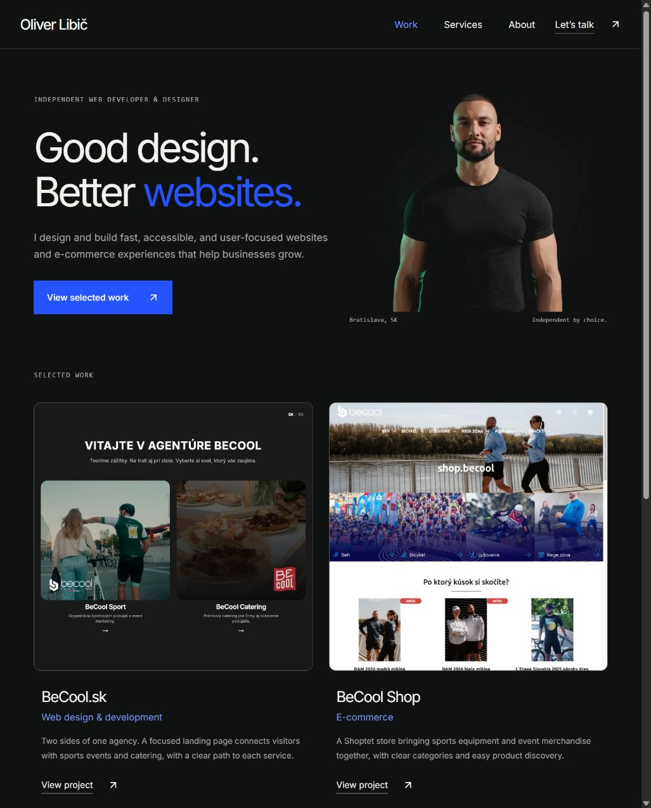
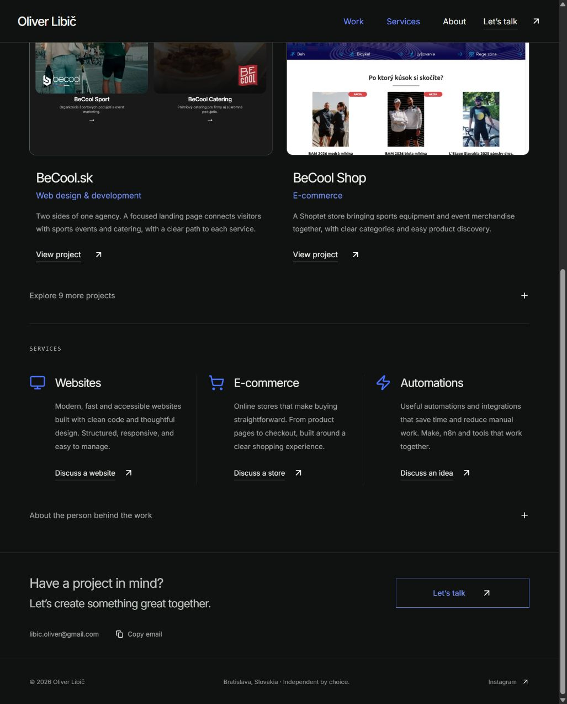
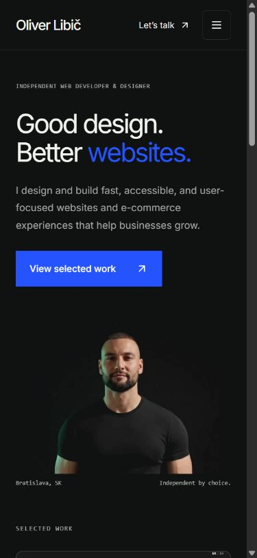
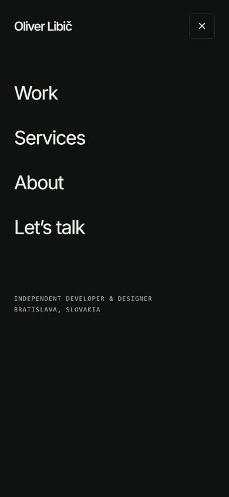
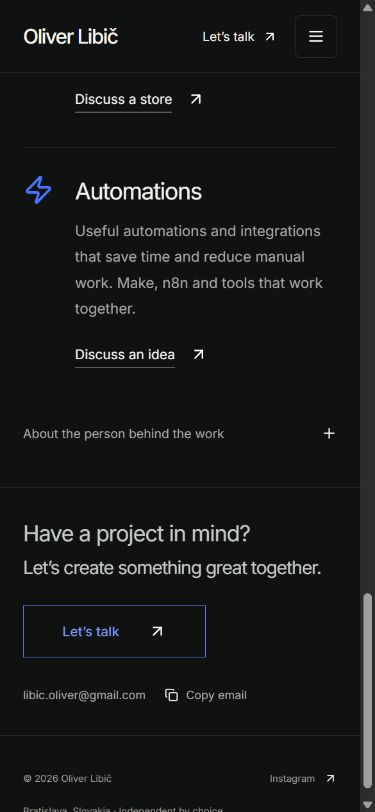
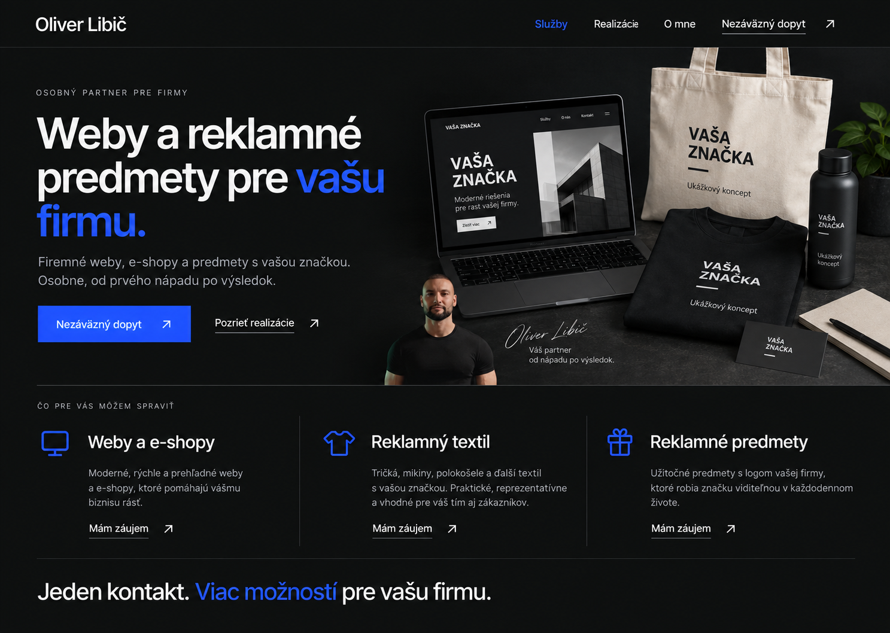
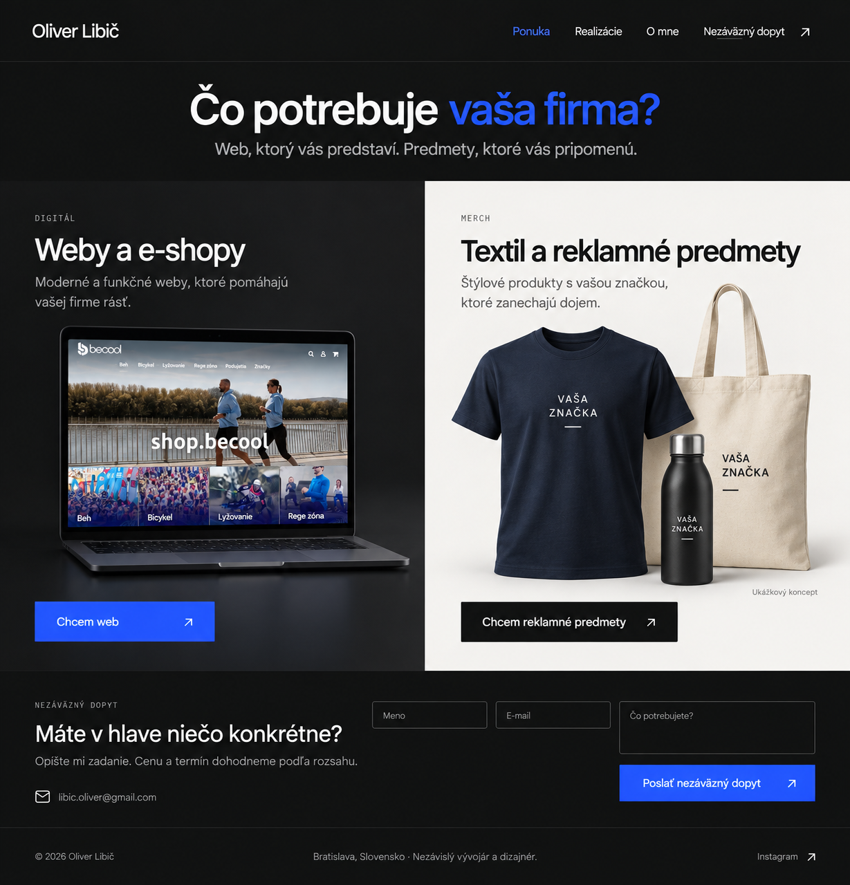
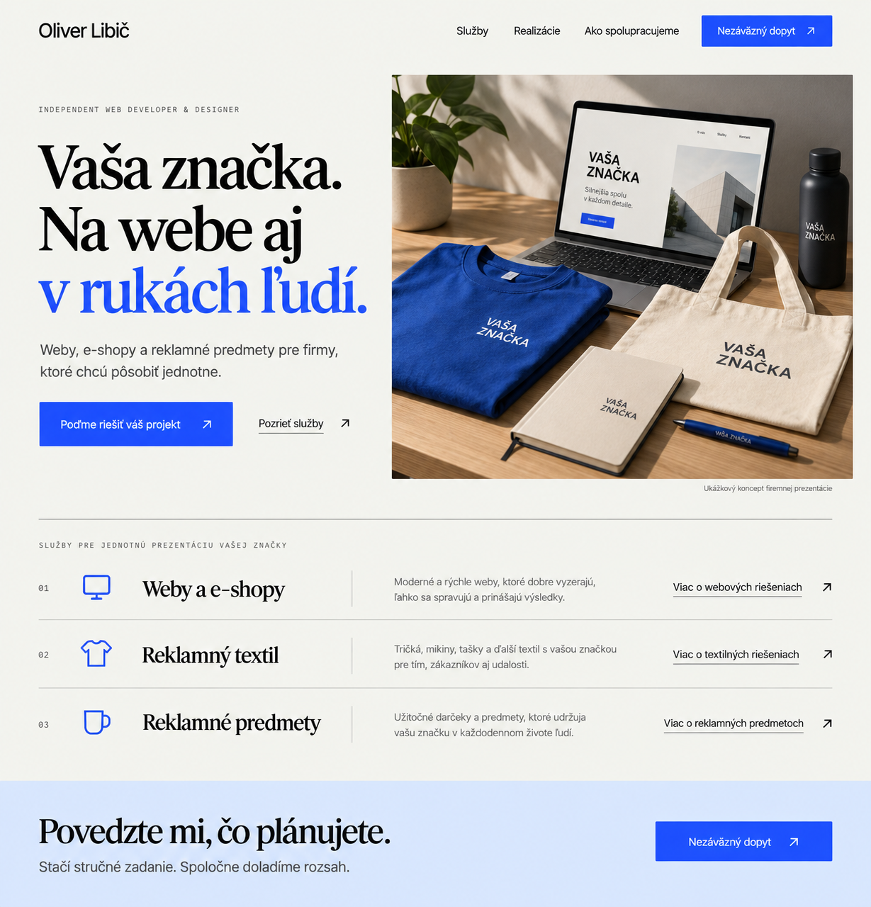

Koncept a kontrola súčasného webu · 13. október 2026
Web, ktorý vysvetlí ponuku
a privedie zákazku.
Odporúčaný smer: Oliver ako osobný partner pre firemné weby a reklamné predmety. Portfólio má dokazovať kvalitu práce a návštevník má pri každej službe vedieť začať konkrétny dopyt.
Zdroj: najnovšia verzia vetvy main, b9492d3. Lokálny priečinok bol zosúladený s touto verziou. Kontrola prebehla na lokálne spustenej kópii; stav nasadenej domény nebol overovaný.
Aktuálny stav: Používateľ vybral návrh 2. Lokálna implementácia je pripravená v hlavnom projekte. Tento rozbor zachováva zistenia z pôvodnej verzie; pre aktuálny stav pozrite prerobený web a výsledok kontroly.
Čo dnes funguje a čo brzdí dopyty
| Krok | Stav | Zistenie a návrh |
|---|
| 1. Prvý dojem | Vizuálne dobrý, ponuka úzka | Úvod „Good design. Better websites.“ a portrét jasne predstavujú tvorcu webov. Reklamné predmety návštevník neobjaví. Pre slovenské firmy odporúčam slovenský úvod, širšiu konkrétnu ponuku a primárne tlačidlo na dopyt. |
| 2. Overenie skúseností | Dobrý základ | Dve výrazné realizácie a deväť projektov v archíve. Zachovať reálne ukážky, doplniť zrozumiteľné vysvetlenie zadania a vlastnej úlohy. Odkazy otvárajú cudzie weby; krátky opis práce má byť dostupný pred odchodom. |
| 3. Výber služby | Neúplný pre novú ponuku | Websites, E-commerce, Automations. Reklamný textil a predmety chýbajú. Doplniť samostatnú oblasť s fotografiami, príkladmi použitia a predvyplnením typu dopytu. |
| 4. Kontakt a objednanie | Najväčšia medzera | Kontakt aj služby používajú mailto odkazy. Chýba zadanie rozsahu, množstva a termínu priamo na stránke. Odporúčam formulár s reálnym doručením, potvrdením a možnosťou opakovať odoslanie pri chybe. |
| 5. Mobilné zobrazenie a menu | V skúšanom rozsahu funkčné | Pri 390 × 844 sa obsah skladá do jedného stĺpca, menu sa otvorí a odkaz na kontakt ho zavrie. Rovnaká obchodná medzera zostáva: návštevník končí pri e-maile. |
Dôkazy: desktop

Kroky 1–2: úvod a portfólio najnovšej verzie.
Kroky 3–4: tri digitálne služby a kontakt cez e-mail.Dôkazy: mobil

Úvod pri 390 × 844.
Otvorené menu.
Kontakt po výbere v menu.Limity kontroly: zachytené desktopové zobrazenie a jeden mobilný rozmer; kontrola obsahu a implementácie odkazov. E-mail nebol odoslaný, externé projekty neboli auditované. Zdroj obsahuje skip link, viditeľný focus, sémantické nadpisy, natívny dialog a rešpektovanie reduced motion. Modrý text na tmavom pozadí a malé pomocné texty treba pri implementácii zmerať; nejde o potvrdenie úplnej prístupnosti ani o audit všetkých zariadení.
Odporúčaný koncept
Weby a reklamné predmety pre vašu firmu.
Navrhnem a vytvorím firemný web alebo e-shop. Pomôžem vám aj s tričkami a ďalšími reklamnými predmetmi s vašou značkou.
Hlavná akcia: Nezáväzný dopyt. Doplnková akcia: Pozrieť realizácie.
Táto formulácia pomenúva výsledok a nepredpokladá vlastnú tlačiareň, sklad ani výrobnú kapacitu. Presný text o výrobe a dodaní sa upraví podľa potvrdeného spôsobu zabezpečenia. Osobná značka Oliver Libič zostáva nositeľom dôvery; netreba predstierať veľkú agentúru.
Prepojenie ponuky môže byť prirodzené: firma rozbieha značku, potrebuje web a oblečenie pre tím; organizátor pripravuje podujatie, potrebuje stránku a tričká; existujúci klient potrebuje nový e-shop a produkty so svojím logom. Tieto situácie sú návrhy obchodného balenia, nie tvrdenia o doterajších realizáciách.
Ako usporiadať ponuku
| Oblasť | Čo má návštevník pochopiť | Čo zadá do dopytu |
|---|
| Weby a e-shopy | Firemný web, prezentačná stránka, internetový obchod; návrh, realizácia a rozsah ďalšej starostlivosti podľa dohody. | Účel webu, existujúca adresa, požadované funkcie, približný termín a voliteľne rozpočet. |
| Reklamný textil | Tričká; mikiny, polokošele či ďalší textil podľa skutočnej dostupnej ponuky. Ukázať použitie pre tím, podujatie alebo merch. | Typ textilu, približné množstvo, veľkosti ak sú známe, umiestnenie loga, termín. |
| Reklamné predmety | Vybraná ponuka napr. tašiek, hrnčekov alebo fliaš po potvrdení dodávateľských možností. Na začiatku radšej niekoľko zrozumiteľných kategórií. | Typ predmetu alebo príležitosť, počet kusov, logo, termín a voliteľne rozpočet. |
| Automatizácie a doplnková pomoc | Zachovať súčasnú službu ako doplnkovú ponuku. Grafiku a ďalšie služby uvádzať iba v rozsahu, ktorý chce Oliver reálne dodávať. | Opis opakujúcej sa práce a používané nástroje, prípadne možnosť „Potrebujem poradiť“. |
Navrhované poradie domovskej stránky
- Úvod: konkrétna ponuka, osobná identita, hlavný dopyt a druhotný odkaz na realizácie.
- Čo potrebujete: prehľad webov a e-shopov, reklamného textilu a predmetov. Pri každej možnosti jasný ďalší krok.
- Vybrané realizácie: existujúce weby s vlastnou úlohou. Pri reklamných predmetoch použiť reálne fotografie; dovtedy označiť návrhové vizualizácie ako „Ukážkový koncept“.
- Ako prebieha spolupráca: zadanie → cenová ponuka a dohoda → návrh na schválenie → realizácia a odovzdanie. Termíny a výrobu sľubovať až podľa overených možností.
- Kto sa o projekt postará: krátke viditeľné predstavenie Olivera, fotka a priamy kontakt. Dôležitú osobnú dôveru neschovávať celú do rozbaľovacej sekcie.
- Praktické otázky: podklady k logu, pomoc s výberom, čo ovplyvňuje cenu, množstvá a termín podľa služby.
- Nezáväzný dopyt: formulár, náhradný e-mail a vysvetlenie, čo nasleduje po odoslaní.
Cesta od záujmu k zákazke
Výber služby → stručné zadanie → kontakt → odoslanie → potvrdenie → cenová ponuka. Kliknutie pri konkrétnej službe predvyplní výber. Možnosť vybrať viac služieb aj „Neviem, potrebujem poradiť“ umožní poslať kombinovaný dopyt.
Povinné údaje obmedziť na službu, meno, e-mail a stručný opis. Firma, telefón, rozpočet a doplňujúce údaje môžu zostať voliteľné. Pri textile a predmetoch sa zobrazí množstvo a požadovaný termín. Logo môže klient poslať neskôr; prílohy pridávať až s bezpečným ukladaním a obmedzením formátu a veľkosti.
Výsledkom prvej verzie má byť žiadosť o cenovú ponuku. Záväzná objednávka sa dokončí po dohode o podkladoch, množstve, cene a termíne. Priame nakupovanie cez košík dáva zmysel až po ustálení produktov, variantov, cien a dodacích podmienok.
Produkčné odoslanie musí používať server alebo overenú formulárovú službu; tajné údaje nesmú byť v JavaScripte stránky. Pridať ochranu proti spamu, kontrolu vstupov, zrozumiteľnú chybovú hlášku, zachovanie vyplneného zadania a potvrdenie až po úspešnom prijatí. Zobraziť informáciu o spracovaní údajov pri formulári.
Tri smery na porovnanie
| Smer | Princíp | Kompromis |
|---|
| Osobný partner pre firmy | Vývoj súčasného tmavého webu. Oliver a konkrétna ponuka v úvode, ukážky webu aj textilu, jeden dopyt. | Najmenší odklon od súčasnej identity; produktové ukážky musia vyvážiť portrét. |
| Digitál a merch | Dve rovnocenné vstupné cesty: „Potrebujem web“ a „Potrebujem reklamné predmety“. Spoločný kontakt a osobná značka. | Najjasnejšie oddelenie potrieb, menej priestoru pre jednotný úvodný príbeh. |
| Značka v praxi | Svetlejší redakčný štýl a jeden ucelený obraz webu, textilu a predmetov. Ponuka podľa situácie firmy. | Silnejšie prepája ponuku, ale potrebuje veľmi jasné popisy jednotlivých služieb. |
Odporúčanie: začať smerom Osobný partner pre firmy. Zachováva rozpoznateľnosť aktuálneho webu, dá sa rozšíriť o produktové ukážky a necháva Olivera ako konkrétneho človeka, ktorý zákazku rieši. Vizualizácie slúžia na výber smeru; nie sú funkčným webom.
Vizuálne návrhy
Samostatné vizualizácie vytvorené vstavaným ImageGen podľa aktuálnych snímok webu. Poradie zodpovedá zobrazeniu v chate. Texty sú pracovné, produktové ukážky ilustračné. Údaje o výrobe, cenách a dostupnosti sa doplnia až po potvrdení ponuky.

Návrh 1 · Osobný partner pre firmy.

Návrh 2 · Digitál a merch.

Návrh 3 · Značka v praxi.
Čo treba doplniť pred zverejnením
- Potvrdiť, či ponuka zahŕňa grafiku, zabezpečenie výroby a dodanie, alebo len časť z toho.
- Vybrať skutočne dodávané kategórie, materiály, technológie potlače, prípadné minimálne množstvá a reálne dodacie možnosti.
- Doplniť vlastné fotografie alebo jasne označené koncepty; zákaznícke logá a referencie používať s príslušným oprávnením.
- Dohodnúť, či zverejniť orientačné ceny a s akým presným rozsahom. Žiadne sumy zatiaľ nie sú vymyslené.
- Zapojiť reálne doručovanie dopytov a overiť úspech aj chybu odoslania, mobil, klávesnicu a čitateľnosť.
Podklady pripravené na implementáciu
Pracovné slovenské texty ponuky a formulára zahŕňajú úvod, služby, reálne projekty, spoluprácu, praktické otázky aj úspech a chyby odoslania. Samostatná špecifikácia príjmu dopytov popisuje polia, správanie, serverové požiadavky a overovacie scenáre. Tieto podklady sú použiteľné pri ktoromkoľvek z troch vizuálnych smerov; nepredstavujú hotové doručovanie.
V tejto fáze boli pripravené zistenia, návrhy a implementačné podklady. Produkčný web nebol upravený ani nasadený. Následne bol zvolený návrh 2 a pripravená lokálna implementácia. Pred publikovaním zostáva potvrdiť rozsah reklamných služieb a produkčné doručovanie.